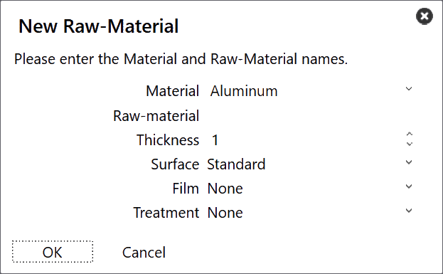
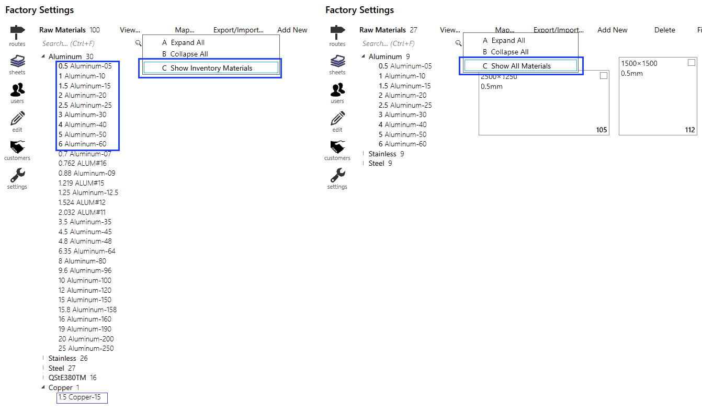

添加新 板材管理可以通过单击 factory 图标访问，通过选择 Sheets 将为您提供设置的材料的概览。点击左侧上面提到的任何材料，将显示可用板材、厚度、尺寸和数量。 要添加新材料，请单击工厂板材页面中的*Add new* → New Material…。 输入Material、Raw Material、Thickness和材料参数。单击 OK。  查看材料 factory → Sheets 中的查看选项有以下选项： Expand All：展开所有材料类别。 Collapse All：折叠所有材料类别。 Show All Materials：列出所有材料，而不管板材库存如何。 Show Inventory Materials：仅列出有板材库存的材料。 粗体显示的材料厚度表示板材可用。  添加板材 要添加新板材，请单击工厂板材页面中的 Add new → New Sheet。修改板材参数。 编辑或删除材料/板材可以在零件分配给材料或布局排样到该板材之前完成。 操作之时无法更改材料名称。因此，需要重新创建一个新的。